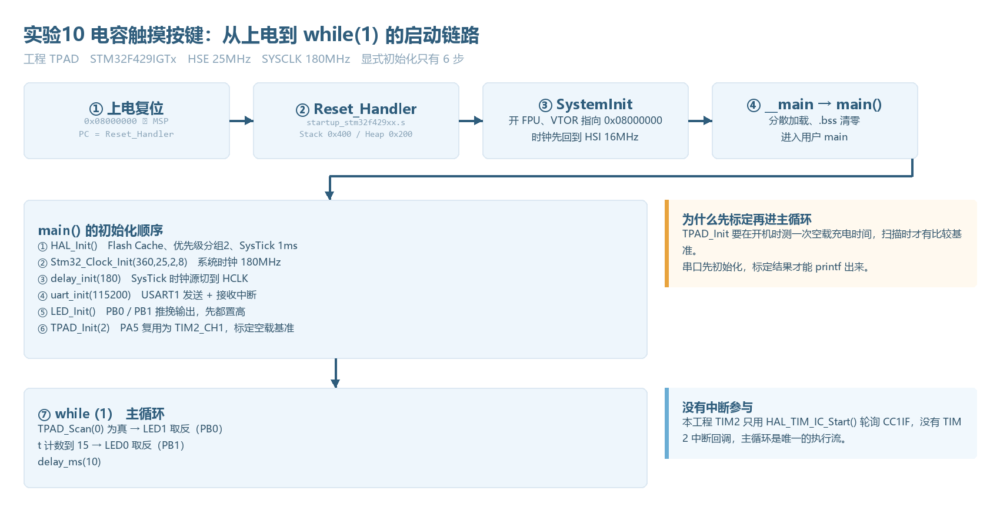
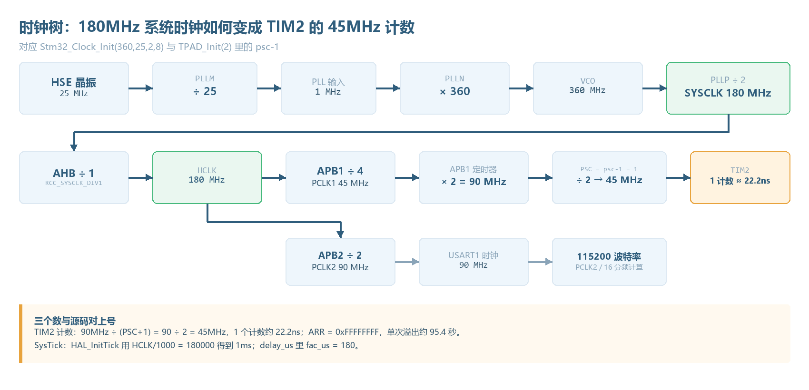
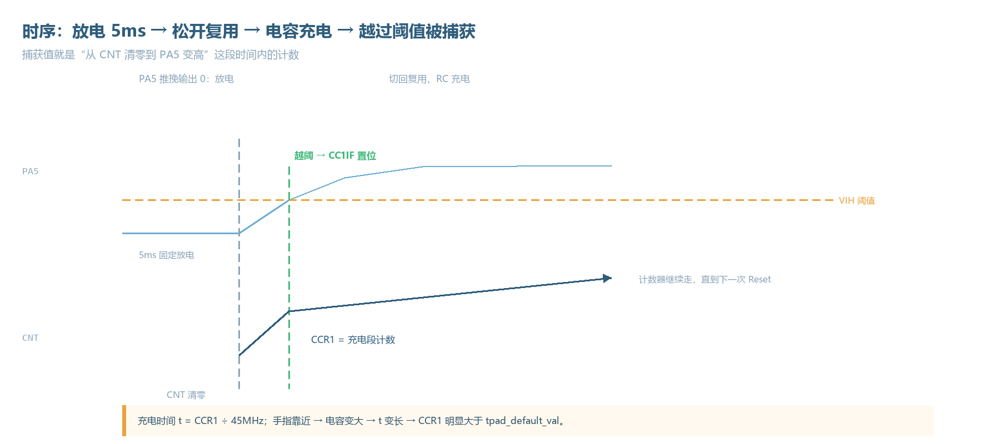
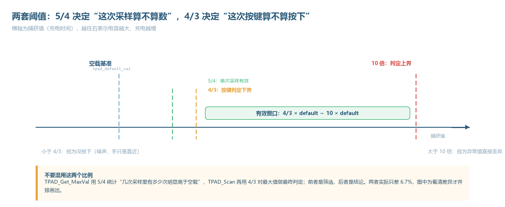
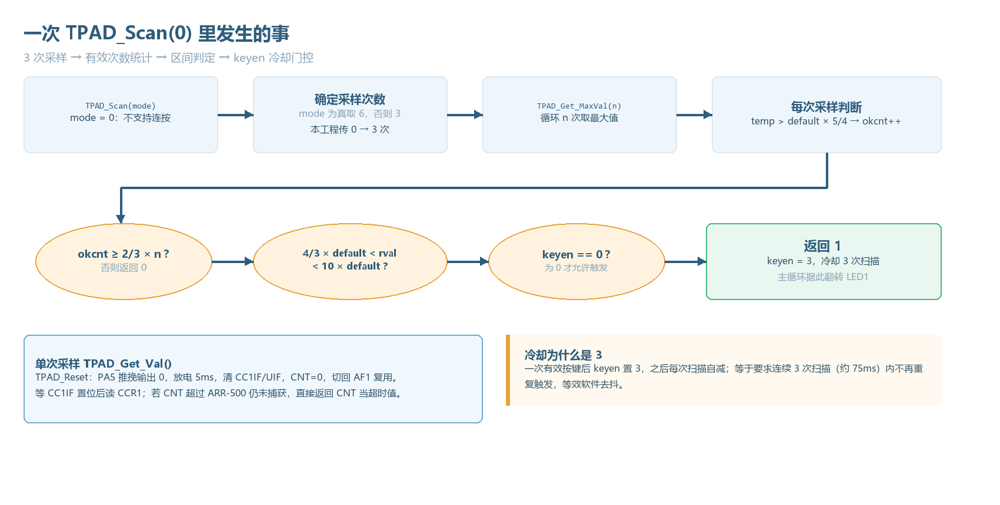

01 实验概述与硬件资源
用 TIM2 测一段 RC 充电时间，把“手指靠近”翻译成“计数值变大”
实验9 用输入捕获测外部 PWM 的高电平宽度；实验10 沿用同一套捕获外设，但被测对象换成了自己搭的 RC 电路：PA5 上的触摸焊盘对地等效一个电容 C，通过上拉电阻充电，充电时间 t 与 C 成正比。手指靠近焊盘会让 C 变大，t 随之变长，定时器捕获到的计数就变大。
| 项目 | 取值 | 来源 |
|---|---|---|
| MCU | STM32F429IGTx（Cortex-M4F，180MHz） | TPAD.uvprojx Device |
| 晶振 / 系统时钟 | HSE 25MHz → SYSCLK 180MHz | Stm32_Clock_Init(360,25,2,8) |
| 触摸引脚 | PA5 → TIM2_CH1（复用功能 AF1） | tpad.c GPIO_AF1_TIM2 |
| 定时器 | TIM2，32 位，ARR = 0xFFFFFFFF | TPAD_ARR_MAX_VAL |
| 计数频率 | 90MHz ÷ (1+1) = 45MHz | TPAD_Init(2) → psc-1 |
| 指示 LED | LED0 = PB1，LED1 = PB0，低电平点亮 | led.h 位带宏 |
| 串口 | USART1，115200-8-N-1 | uart_init(115200) |
PA5 → TIM2_CH1
TIM2 → APB1 定时器 90MHz
TPAD_Init(2) → 45MHz
LED1 → PB0
LED0 → PB1
本实验没有中断：TIM2 只用
HAL_TIM_IC_Start() 启动，主循环靠 __HAL_TIM_GET_FLAG 轮询 CC1IF。所以整页的“启动过程”就是一条主线：时钟先对、延时可用、串口可打印，再标定基准，最后进 while(1) 反复扫描。02 工程目录与文件分工
八个源文件各自负责一段，读的时候按“启动 → 系统 → 驱动”三层看
| 文件 | 职责 | 本页关注点 |
|---|---|---|
USER/main.c | 用户入口，六步初始化 + 主循环 | 初始化顺序、扫描节奏 |
CORE/startup_stm32f429xx.s | 向量表、复位入口、栈堆大小 | 0x08000000 取 MSP/PC |
SYSTEM/sys/sys.c | Stm32_Clock_Init、WFI、开关中断等 | PLL 与总线分频 |
SYSTEM/delay/delay.c | 基于 SysTick 的 us/ms 延时 | fac_us、轮询 VAL |
SYSTEM/usart/usart.c | USART1 初始化与 printf 重定向 | 标定值如何打印 |
HARDWARE/LED/led.c | PB0 / PB1 推挽输出 | 现象观察口 |
HARDWARE/TPAD/tpad.c | 触摸驱动：标定、放电、捕获、判定 | 全页核心 |
HALLIB/ | ST 官方 HAL 库（工程内改了优先级分组） | 只看被调用的函数 |
USER/stm32f4xx_it.c 里只有 SysTick_Handler() 调用 HAL_IncTick() 以及各 fault 的死循环，没有任何 TIM2 中断服务函数，这与“纯轮询”的实现互相印证。
HALLIB 只读不改：整页只引用被工程实际调用的
HAL_TIM_IC_Init、HAL_RCC_OscConfig 等，不逐行展开库实现。03 启动流程总览与 main
从上电到 while(1)，显式初始化只有六步，顺序不能随意调换

main 函数全文
int main(void)
{
u8 t=0;
HAL_Init(); //初始化HAL库
Stm32_Clock_Init(360,25,2,8); //设置时钟,180Mhz
delay_init(180); //初始化延时函数
uart_init(115200); //初始化USART
LED_Init(); //初始化LED
TPAD_Init(2); //初始化触摸按键,以90/8=11.25Mhz频率计数
while(1)
{
if(TPAD_Scan(0)) //成功捕获到了一次上升沿(此函数执行时间至少15ms)
{
LED1=!LED1; //LED1取反
}
t++;
if(t==15)
{
t=0;
LED0=!LED0;
}
delay_ms(10);
}
}
为什么是这个顺序
| 步骤 | 做了什么 | 如果提前/推后会怎样 |
|---|---|---|
| ① HAL_Init | Flash Cache、优先级分组、SysTick 1ms 时基 | 没有它，后面 HAL 的延时与中断优先级都无依据 |
| ② Stm32_Clock_Init | HSE + PLL，SYSCLK 180MHz | 时钟没升上去，定时器分频算出来的时间全错 |
| ③ delay_init(180) | 按 180MHz 计算 fac_us | 参数必须与 ② 的实际频率一致，否则延时成比例偏差 |
| ④ uart_init | 115200，开发送 + 接收中断 | 必须在 TPAD_Init 之前，否则标定结果打印不出来 |
| ⑤ LED_Init | PB0 / PB1 推挽输出并置高 | 提前置高避免上电瞬间误亮 |
| ⑥ TPAD_Init(2) | PA5 复用为 TIM2_CH1，采样并保存空载基准 | 必须在主循环前完成，扫描时才有比较对象 |
实参是
TPAD_Init(2)，进入 TIM2_CH1_Cap_Init(arr, psc-1) 后 PSC = 1，计数频率为 90MHz ÷ 2 = 45MHz。原注释误写为“90/8=11.25Mhz”（旧版本 PSC=7 的遗留），已按代码更正为 90/2=45MHz。04 启动文件与向量表
复位后 CPU 只认两件事：栈顶地址和复位入口
Stack_Size EQU 0x400; ; 1KB 栈 Heap_Size EQU 0x200; ; 512B 堆 AREA RESET, DATA, READONLY __Vectors DCD __initial_sp ; Top of Stack DCD Reset_Handler ; Reset Handler DCD NMI_Handler DCD HardFault_Handler ... DCD SysTick_Handler
| 环节 | 内容 |
|---|---|
| 取栈顶 | 地址 0x08000000 处存放 __initial_sp，上电后装入 MSP |
| 取入口 | 0x08000004 处存放 Reset_Handler，装入 PC 开始执行 |
| 中断号 | 异常 1~15 依次为 Reset / NMI / HardFault / … / SysTick；外设中断从第 16 项开始（TIM2 为 TIM2_IRQHandler，本工程未使用） |
| 跳转 C 世界 | Reset_Handler → SystemInit → __main（分散加载、.bss 清零）→ main |
| 弱符号 | 启动文件的 xxx_Handler 均为 WEAK，stm32f4xx_it.c 里重新定义即可覆盖 |
本工程
stm32f4xx_it.c 只覆盖了 SysTick_Handler，TIM2 的向量仍是启动文件里的死循环——因为没有开启 TIM2 中断，这个向量永远不会被触发。05 SystemInit 与 HAL_Init
一个准备 CPU 运行环境，一个准备 HAL 的时基与优先级规则
SystemInit（复位后、main 前）
由启动文件调用，做三件事：使能 FPU（CPACR）、把向量表基址 SCB->VTOR 指向 0x08000000、把时钟暂时切回内部 HSI 16MHz。真正的 180MHz 要等 main 里调用 Stm32_Clock_Init。
HAL_Init
HAL_Init(); // 内部依次：HAL_NVIC_SetPriorityGrouping / HAL_InitTick / ... // 工程内 HALLIB 第 183 行已被改为： HAL_NVIC_SetPriorityGrouping(NVIC_PRIORITYGROUP_2);
| 项目 | 配置 | 含义 |
|---|---|---|
| 优先级分组 | NVIC_PRIORITYGROUP_2 | 4 位优先级里 2 位抢占（0~3）、2 位子优先级（0~3） |
| SysTick 中断优先级 | TICK_INT_PRIORITY = 0x0F | 编码后抢占 3、子优先级 0，是最低档 |
| SysTick 周期 | HCLK / 1000 = 180000 | 1ms 一次的 HAL_IncTick()，供 HAL_Delay 使用 |
| Flash 预取 | Prefetch / Instruction / Data Cache 全开 | 180MHz 下取指效率的前提 |
本工程的
delay_ms 不用 HAL_Delay，而是自己轮询 SysTick->VAL；但 HAL_InitTick 依然要把 SysTick 配好，否则 HAL_GetTick 类接口全部失效。06 时钟树与 45MHz 计数
180MHz 系统时钟经 APB1 分频与定时器倍频，最终变成 45MHz 的计数节拍

RCC_OscInitStructure.PLL.PLLM = pllm; // 25 RCC_OscInitStructure.PLL.PLLN = plln; // 360 RCC_OscInitStructure.PLL.PLLP = pllp; // 2 RCC_OscInitStructure.PLL.PLLQ = pllq; // 8 ... RCC_ClkInitStructure.AHBCLKDivider = RCC_SYSCLK_DIV1; // HCLK 180MHz RCC_ClkInitStructure.APB1CLKDivider = RCC_HCLK_DIV4; // PCLK1 45MHz RCC_ClkInitStructure.APB2CLKDivider = RCC_HCLK_DIV2; // PCLK2 90MHz ret = HAL_RCC_ClockConfig(&RCC_ClkInitStructure, FLASH_LATENCY_5);
| 节点 | 算式 | 结果 |
|---|---|---|
| PLL 输入 | 25MHz ÷ PLLM(25) | 1MHz |
| VCO | 1MHz × PLLN(360) | 360MHz |
| SYSCLK | 360MHz ÷ PLLP(2) | 180MHz |
| HCLK | 180MHz ÷ 1 | 180MHz |
| PCLK1 | 180MHz ÷ 4 | 45MHz |
| APB1 定时器时钟 | 45MHz × 2（分频不为 1 时倍频） | 90MHz |
| TIM2 计数 | 90MHz ÷ (PSC+1) = 90 ÷ 2 | 45MHz，1 计数 ≈ 22.2ns |
这套配置必须先
HAL_PWREx_EnableOverDrive() 再切 180MHz，并配 FLASH_LATENCY_5（5 个等待周期）；三步中任一步返回非 HAL_OK，源码直接 while(1) 停住。07 延时函数与串口
delay 提供“5ms 放电”和“10ms 扫描间隔”，串口负责把标定值打出来
void delay_init(u8 SYSCLK)
{
HAL_SYSTICK_CLKSourceConfig(SYSTICK_CLKSOURCE_HCLK); // SysTick 时钟源 = HCLK
fac_us = SYSCLK; // 180MHz → 180
}
// delay_us：设置 LOAD 后轮询 SysTick->VAL 递减到 0
// delay_ms：循环调用 delay_us(1000)，非精确毫秒
| 项目 | 配置 | 说明 |
|---|---|---|
| 延时基准 | delay_init(180) | 与 SYSCLK 180MHz 对应 |
| us 级实现 | 轮询 SysTick->VAL | 不产生中断，不占用中断资源 |
| ms 级实现 | delay_us(1000) 循环 | 受循环开销影响，略长于标称值 |
| 串口参数 | 115200、8 数据位、1 停止位、无校验 | uart_init(115200) |
| 接收 | HAL_UART_Receive_IT(..., RXBUFFERSIZE) | 开启接收中断，主循环未使用 |
| printf | fputc 重定向到 USART1 | 标定与判定结果都走这里 |
| USART1 中断优先级 | HAL_NVIC_SetPriority(USART1_IRQn, 3, 3) | 分组 2 下即抢占 3、子 3 |
TPAD 的时间常量全部建立在这套延时上：
TPAD_Reset 里放电 5ms、TPAD_Init 里每次采样间隔 10ms、主循环末尾 delay_ms(10)。若 delay_init 传错频率，充电时间不变，但节奏会整体偏移。08 LED 初始化与主循环节奏
两个 LED 分别指示“扫描节拍”和“触摸事件”
void LED_Init(void)
{
GPIO_InitTypeDef GPIO_Initure;
__HAL_RCC_GPIOB_CLK_ENABLE(); //开启GPIOB时钟
GPIO_Initure.Pin=GPIO_PIN_0|GPIO_PIN_1; //PB0, PB1
GPIO_Initure.Mode=GPIO_MODE_OUTPUT_PP; //推挽输出
GPIO_Initure.Pull=GPIO_PULLUP; //上拉
GPIO_Initure.Speed=GPIO_SPEED_HIGH; //高速
HAL_GPIO_Init(GPIOB,&GPIO_Initure);
HAL_GPIO_WritePin(GPIOB,GPIO_PIN_0,GPIO_PIN_SET); //PB0置1
HAL_GPIO_WritePin(GPIOB,GPIO_PIN_1,GPIO_PIN_SET); //PB1置1
}
led.h 用位带宏把两个引脚简化成可直接赋值的变量：LED0 对应 PB1，LED1 对应 PB0。因为初始化时都置高，所以上电默认全灭（低电平点亮）。
| 观察对象 | 触发条件 | 周期估算 |
|---|---|---|
| LED1（PB0） | TPAD_Scan(0) 返回 1 | 随触摸事件翻转，一次有效触摸翻转一次 |
| LED0（PB1） | t 计到 15 | 15 × (扫描≥15ms + 延时10ms) ≈ 375ms 翻转一次，即约 0.75s 一个闪烁周期 |
| 串口 | rval 落在有效窗口内 | 每次判定为“有效值”打印一次 r:xxx |
LED0 的闪烁说明主循环还活着，LED1 的翻转才代表触摸判定成功。调不出来时先看 LED0 有没有在闪——它在闪，说明卡在 TPAD 判定而不是系统跑飞。
09 电容触摸原理与 PA5 配置
同一个引脚在两个阶段扮演两种角色：放电时是推挽输出，测量时是定时器输入
焊盘与手指之间形成电容，焊盘对地还有寄生电容。用上拉电阻给焊盘充电时，电压上升速度由 RC 决定：电压到 VIH（输入高电平阈值）所需时间 t ≈ R·C·ln(...)，C 越大 t 越长。定时器把 t 量化成计数，就等于把“电容变化”量化成了数字。
| 阶段 | PA5 模式 | 作用 |
|---|---|---|
| 放电 | GPIO_MODE_OUTPUT_PP + GPIO_PULLDOWN，输出 0 | 把焊盘电容上的电荷放干净，保证每次测量起点一致 |
| 充电 / 捕获 | GPIO_MODE_AF_PP + GPIO_NOPULL + GPIO_AF1_TIM2 | 引脚交给 TIM2_CH1，上升沿到来时把 CNT 锁进 CCR1 |
| 计数 | TIM2 32 位向上计数，ARR = 0xFFFFFFFF | 量程约 95.4 秒，远超一次充电所需，几乎不会溢出 |
PA5 → AF1 = TIM2_CH1
上升沿捕获
1 计数 ≈ 22.2ns
单次溢出 ≈ 95.4s
电容式触摸没有机械触点，读数会随温湿度、板子固定方式漂移，所以必须每次开机重新标定空载值，再用相对比例（5/4、4/3、10 倍）判定，而不是写死一个绝对阈值。
10 TPAD_Reset 与充电时序
先把电容放空、计数器清零，再放开引脚让 RC 自己充电，等上升沿把时间锁进 CCR1

void TPAD_Reset(void)
{
GPIO_InitTypeDef GPIO_Initure;
GPIO_Initure.Pin=GPIO_PIN_5; //PA5
GPIO_Initure.Mode=GPIO_MODE_OUTPUT_PP; //推挽输出
GPIO_Initure.Pull=GPIO_PULLDOWN; //下拉
GPIO_Initure.Speed=GPIO_SPEED_HIGH;
HAL_GPIO_Init(GPIOA,&GPIO_Initure);
HAL_GPIO_WritePin(GPIOA,GPIO_PIN_5,GPIO_PIN_RESET); //PA5输出0，放电
delay_ms(5);
__HAL_TIM_CLEAR_FLAG(&TIM2_Handler,TIM_FLAG_CC1|TIM_FLAG_UPDATE);
__HAL_TIM_SET_COUNTER(&TIM2_Handler,0); //计数器值归0
GPIO_Initure.Mode=GPIO_MODE_AF_PP; //推挽复用
GPIO_Initure.Pull=GPIO_NOPULL;
GPIO_Initure.Alternate=GPIO_AF1_TIM2; //PA5复用为TIM2通道1
HAL_GPIO_Init(GPIOA,&GPIO_Initure);
}
u16 TPAD_Get_Val(void)
{
TPAD_Reset();
while(__HAL_TIM_GET_FLAG(&TIM2_Handler,TIM_FLAG_CC1)==RESET) //等待捕获上升沿
{
if(__HAL_TIM_GET_COUNTER(&TIM2_Handler)>TPAD_ARR_MAX_VAL-500)
return __HAL_TIM_GET_COUNTER(&TIM2_Handler); //超时，直接返回CNT
};
return HAL_TIM_ReadCapturedValue(&TIM2_Handler,TIM_CHANNEL_1);
}
| 步骤 | 关键语句 | 结果 |
|---|---|---|
| 放电 | HAL_GPIO_WritePin(..., RESET) + delay_ms(5) | 焊盘电压拉到 0，持续 5ms 确保放干净 |
| 清场 | 清 CC1IF / UIF，CNT = 0 | 本次测量的起点，避免上一次的标志干扰 |
| 放开 | 切回 AF_PP + AF1_TIM2 | 上拉电阻开始给电容充电 |
| 等待 | 轮询 CC1IF 直到置位 | 电压越过 VIH 的瞬间被硬件锁存 |
| 取值 | HAL_TIM_ReadCapturedValue(..., CHANNEL_1) | 返回 CCR1，即充电段计数 |
| 超时保护 | CNT > ARR - 500 | 32 位定时器几乎不会溢出，但仍保留兜底返回 |
时序图的横轴不是等比例的：5ms 放电段在 45MHz 下相当于 22.5 万个计数，而一次正常充电只有几百到几千个计数。图里把放电段压窄，是为了让充电曲线看得清。
11 TIM2_CH1 输入捕获初始化
只配置“上升沿 + 直连 TI1 + 不分频 + 不滤波”，启动后靠轮询取结果
void TIM2_CH1_Cap_Init(u32 arr,u16 psc)
{
TIM_IC_InitTypeDef TIM2_CH1Config;
TIM2_Handler.Instance=TIM2;
TIM2_Handler.Init.Prescaler=psc; // 分频
TIM2_Handler.Init.CounterMode=TIM_COUNTERMODE_UP; // 向上计数
TIM2_Handler.Init.Period=arr; // 自动装载值
TIM2_Handler.Init.ClockDivision=TIM_CLOCKDIVISION_DIV1;
HAL_TIM_IC_Init(&TIM2_Handler);
TIM2_CH1Config.ICPolarity=TIM_ICPOLARITY_RISING; // 上升沿捕获
TIM2_CH1Config.ICSelection=TIM_ICSELECTION_DIRECTTI; // 映射到TI1
TIM2_CH1Config.ICPrescaler=TIM_ICPSC_DIV1; // 不分频
TIM2_CH1Config.ICFilter=0; // 不滤波
HAL_TIM_IC_ConfigChannel(&TIM2_Handler,&TIM2_CH1Config,TIM_CHANNEL_1);
HAL_TIM_IC_Start(&TIM2_Handler,TIM_CHANNEL_1); // 启动捕获（非中断）
}
| 参数 | 值 | 推导 / 说明 |
|---|---|---|
| Prescaler | psc = 2-1 = 1 | 计数频率 90MHz ÷ (1+1) = 45MHz |
| Period (ARR) | 0xFFFFFFFF | TIM2 是 32 位定时器，量程最大 |
| CounterMode | UP | 从 0 向上计到 ARR 再回绕 |
| ICPolarity | RISING | 只关心电压越过 VIH 的那个沿 |
| ICSelection | DIRECTTI | CH1 直连 TI1，不经过交叉通道 |
| ICFilter | 0 | 不滤波，保留真实充电斜率 |
| NVIC | 未配置 | HAL_TIM_IC_Start 不产生中断，因此没有 TIM2_IRQHandler |
MSP：时钟与引脚
void HAL_TIM_IC_MspInit(TIM_HandleTypeDef *htim)
{
GPIO_InitTypeDef GPIO_Initure;
__HAL_RCC_TIM2_CLK_ENABLE(); //使能TIM2时钟
__HAL_RCC_GPIOA_CLK_ENABLE(); //开启GPIOA时钟
GPIO_Initure.Pin=GPIO_PIN_5;
GPIO_Initure.Mode=GPIO_MODE_AF_PP; //推挽复用
GPIO_Initure.Pull=GPIO_NOPULL;
GPIO_Initure.Speed=GPIO_SPEED_HIGH;
GPIO_Initure.Alternate=GPIO_AF1_TIM2; //PA5复用为TIM2通道1
HAL_GPIO_Init(GPIOA,&GPIO_Initure);
}
调用顺序是
HAL_TIM_IC_Init 先触发 HAL_TIM_IC_MspInit（开时钟、配引脚），再 HAL_TIM_IC_ConfigChannel 配通道。MspInit 里没有 NVIC 配置，正好对应“本实验不用中断”。12 空载标定与两套阈值
开机先测 10 次空载值，排序后取中间 6 个平均，得到后续所有判定的基准

u8 TPAD_Init(u8 psc)
{
u16 buf[10];
u16 temp;
u8 j,i;
TIM2_CH1_Cap_Init(TPAD_ARR_MAX_VAL,psc-1); //设置分频系数
for(i=0;i<10;i++) //连续读取10次
{
buf[i]=TPAD_Get_Val();
delay_ms(10);
}
for(i=0;i<9;i++) //冒泡升序
{
for(j=i+1;j<10;j++)
{
if(buf[i]>buf[j])
{
temp=buf[i]; buf[i]=buf[j]; buf[j]=temp;
}
}
}
temp=0;
for(i=2;i<8;i++)temp+=buf[i]; //取中间的8个数据进行平均
tpad_default_val=temp/6;
printf("tpad_default_val:%d\r\n",tpad_default_val);
if(tpad_default_val>TPAD_ARR_MAX_VAL/2)return 1; //不正常
return 0;
}
| 环节 | 实际做法 | 作用 |
|---|---|---|
| 采样次数 | 循环 10 次，每次间隔 delay_ms(10) | 给电容充分的放电/恢复时间 |
| 排序 | 冒泡升序 | 把偶发的大值/小值挤到两端 |
| 平均范围 | buf[2] ~ buf[7]，共 6 个 | 去掉最小 2 个和最大 2 个，抗干扰 |
| 基准值 | temp / 6 存入 tpad_default_val | 全局变量，扫描时反复引用 |
| 合理性检查 | > TPAD_ARR_MAX_VAL/2 返回 1 | 接近半量程说明引脚可能悬空或短路 |
三个比例各自管什么
| 比例 | 出现位置 | 判据 | 含义 |
|---|---|---|---|
| 5/4 | TPAD_Get_MaxVal | temp > default*5/4 | 单次采样“明显高于空载”，计入有效次数 |
| 2/3 | TPAD_Get_MaxVal | okcnt >= n*2/3 | 至少三分之二的采样有效，才认为这批数据可信 |
| 4/3 | TPAD_Scan | rval > default*4/3 | 对最大值做最终判定，超过才算按下 |
| 10 倍 | TPAD_Scan | rval < 10*default | 上界，超过视为异常直接丢弃 |
源码注释“取中间的 8 个数据进行平均”与循环
for(i=2;i<8;i++) 不符：实际累加 buf[2]~buf[7] 共 6 个数，除数也是 6，运算本身自洽，只是注释过时。13 扫描判定与去抖
采样 → 统计有效次数 → 区间判定 → keyen 冷却，四道关卡逐级收紧

u16 TPAD_Get_MaxVal(u8 n)
{
u16 temp=0;
u16 res=0;
u8 lcntnum=n*2/3; //至少2/3*n的有效个触摸,才算有效
u8 okcnt=0;
while(n--)
{
temp=TPAD_Get_Val();
if(temp>(tpad_default_val*5/4))okcnt++; //大于默认值的5/4才算有效
if(temp>res)res=temp;
}
if(okcnt>=lcntnum)return res;
else return 0;
}
u8 TPAD_Scan(u8 mode)
{
static u8 keyen=0; //0,可以开始检测;>0,还不能开始检测
u8 res=0;
u8 sample=3; //默认采样3次
u16 rval;
if(mode)
{
sample=6; //支持连按,采样6次
keyen=0; //支持连按
}
rval=TPAD_Get_MaxVal(sample);
if(rval>(tpad_default_val*4/3)&&rval<(10*tpad_default_val))
{
if(keyen==0)res=1;
printf("r:%d\r\n",rval);
keyen=3; //至少要再过3次之后才能按键有效
}
if(keyen)keyen--;
return res;
}
| 关卡 | 条件 | 不满足时的结果 |
|---|---|---|
| ① 单次有效 | temp > default × 5/4 | 不计数，但仍参与取最大值 |
| ② 次数门限 | okcnt ≥ n × 2/3（3 次→2，6 次→4） | 整批作废，TPAD_Get_MaxVal 返回 0 |
| ③ 区间判定 | 4/3 × default < rval < 10 × default | 不置位，也不改 keyen |
| ④ 冷却门控 | keyen == 0 | 仍打印 r:xxx，但返回 0，不翻转 LED1 |
keyen 每次有效判定后置 3，并在每次扫描末尾自减 1。也就是说一次有效触摸之后，接下来 3 次扫描（约 75ms）即使检测到有效值也不会再触发，直到它减回 0。mode=1 时每轮强制把 keyen 清零，所以支持一直按住连续触发。
注意
keyen 是 static 局部变量：跨调用保持状态，作用等价于文件级全局变量，但作用域只在本函数内，外部无法误改。14 实验现象、交互演示与常见问题
先看现象是否对得上，再用演示复现判定分支
正常现象
| 观察点 | 预期 | 说明 |
|---|---|---|
| 上电瞬间 | 两个 LED 都不亮 | LED_Init 把 PB0 / PB1 置高 |
| 串口 | 开机打印一行 tpad_default_val:xxx | TPAD_Init 里的 printf |
| 不触摸 | LED0 约 0.75s 闪一次，LED1 不动 | 主循环在跑，但没有有效判定 |
| 手指按下 | LED1 翻转一次，串口打印 r:xxx | TPAD_Scan(0) 返回 1 |
| 一直按住 | 只翻转一次 | mode=0，必须松开再按 |
交互演示：复现 TPAD_Scan 的判定
虚拟基准 default = 3000（5/4 线 3750，4/3 线 4000，10 倍线 30000）
手指状态：抬起
keyen：0
最近 rval：-
LED1（PB0）
等待操作…
演示只复现
TPAD_Get_MaxVal 与 TPAD_Scan 的整数判断（有效次数取 n*2/3 整除），采样值用随机数模拟噪声，不涉及真实硬件与延时。现象 → 原因 → 排查
| 现象 | 可能原因 | 排查方向 |
|---|---|---|
| LED0 不闪 | 程序没进主循环或卡死 | 单步跟到 while(1)，检查 Stm32_Clock_Init 是否在 while(1) 卡住 |
| 上电标定值很大（接近半量程） | PA5 未接焊盘或虚焊 | TPAD_Init 返回 1，检查焊盘与连线 |
| 完全按不动 | 基准值偏高，4/3 门限够不到 | 看串口 r:xxx 与 tpad_default_val 的比值是否接近 1 |
| 一次按下翻转多次 | 判定过于灵敏或 keyen 被绕过 | 确认调用的是 TPAD_Scan(0) 而不是 1 |
| 串口无输出 | uart 未初始化或波特率不符 | 确认 uart_init 在 TPAD_Init 之前调用 |